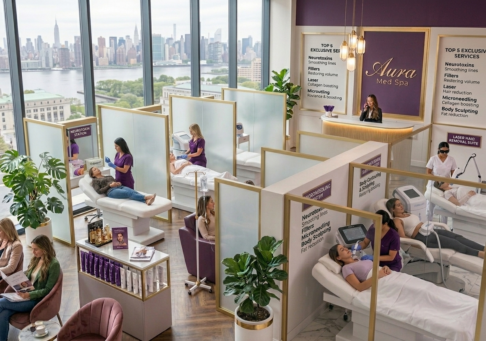

Why It Feels Like In-Person Service
Three pillars make MassaPro IVR feel like a person standing in front of you — not a video call on a laptop. The technology disappears; the interaction is what the customer remembers.
Human Scale
The advisor appears life-size on the service point's screen, looking straight at the camera. Perceived service and trust match a staffed counter — not a video call on a laptop; a person standing in front of you.
Shared Viewing
The advisor shares contracts, forms, or catalogues on screen in real time. Customers visually review orders, applications, or documents before confirming. No more "I will email it to you later."
Control from Their Phone
The customer runs the session from their own phone. No shared touchscreens. No giving up control to a kiosk. They can end the session, mute, or switch channels at any time.